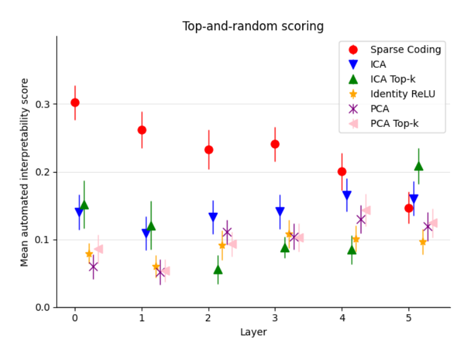

Autointerpretation scores with fixed-K PCA and ICA baselines

Reading the added Top-k markers
A single scatter plot: x-axis is residual-stream layer (0 through 5), y-axis is mean automated interpretability score under top-and-random scoring (named in the plot's own title), with error bars per point. Six methods are plotted per layer: sparse coding (the paper's method), plus five baselines -- ICA, PCA, and Identity ReLU (individual neurons), as already seen in the main comparison, and two new ones introduced for this appendix, 'ICA Top-k' and 'PCA Top-k.' The Top-k variants restrict PCA/ICA to a fixed number K of directions allowed to be simultaneously 'active' per datapoint, matched to the sparse dictionary's own average active-feature count, rather than PCA/ICA's default of always having every direction active. The point of the plot is not sparse coding versus everything else, but each ordinary baseline versus its own Top-k version: if unequal numbers of active comparison directions explained sparse coding's advantage, ICA Top-k and PCA Top-k should jump much closer to sparse coding's score than plain ICA and PCA do.
What it shows
In layers 0 through 3, sparse coding scores clearly highest of the six methods (starting near 0.30 at layer 0 and declining through the low-to-mid 0.20s by layer 3), and the Top-k variants do not close the gap: ICA Top-k and PCA Top-k track close to their unrestricted counterparts rather than rising toward sparse coding, and ICA Top-k even scores below plain ICA at layers 2 and 3. By layer 5, sparse coding's earlier lead has largely disappeared -- ICA and ICA Top-k both sit at or above sparse coding's score there, continuing the late-layer decline already visible in the main comparison.
Ruling out an activation-count confound
This is the paper's Top-K-active baseline control experiment, checking that the Autointerpretability score advantage of sparse coding over Independent Component Analysis (ICA) and Principal Component Analysis (PCA) is not merely an artifact of a dictionary feature activating on a small subset of inputs while a raw PCA or ICA direction is active across an entire half-space (sparse-autoencoders, §"G TOP K COMPARISONS", p. 18). Matching the number of simultaneously active directions closes only a small part of the gap in early layers, so the interpretability advantage documented under Top-and-random vs. random-only interpretability scoring survives this control.